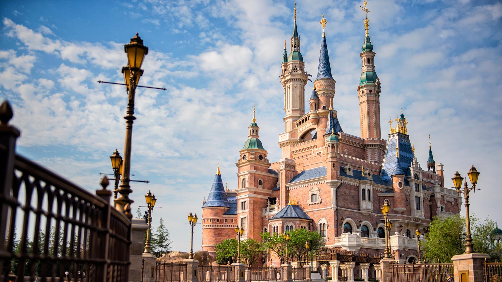
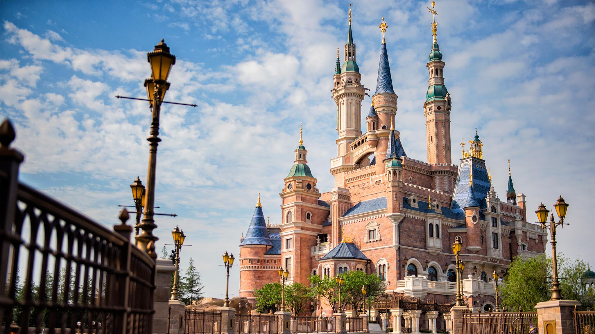
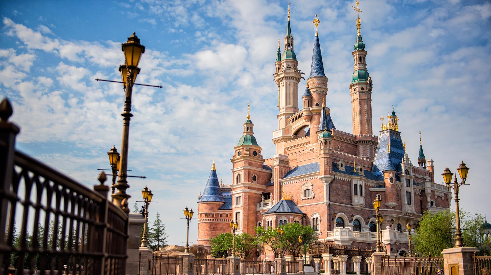

Lujiazui (simplified Chinese: 陆家嘴; traditional Chinese: 陸家嘴; pinyin: Lùjiāzuǐ, lit. meaning "[The] Lu family's mouth"), formerly known as Lokatse from its pronunciation in Shanghainese, is a locality in Shanghai, a peninsula formed by a bend in the Huangpu River. Since the early 1990s, Lujiazui has been developed specifically as a new financial district of Shanghai. The decision to earmark Lujiazui for this purpose reflects its location: it is located on the east side of the Huangpu River in Pudong, and sits directly across the river from the old financial and business district of the Bund. Lujiazui is a national-level development zone designated by the government. In 2005, the State Council reaffirmed the positioning of the 31.78 km2 (12.27 sq mi) Lujiazui area as the only finance and trade zone among the 185 state-level development zones in mainland China.
The Bund or Waitan (Chinese: 外滩; pinyin: Wàitān, Shanghainese: nga3thae1, lit. 'Outer Beach') is a waterfront area and a protected historical district in central Shanghai. The area centers on a section of Zhongshan Road (East Zhongshan Road No.1) within the former Shanghai International Settlement, which runs along the western bank of the Huangpu River in the eastern part of Huangpu District. The area along the river faces the modern skyscrapers of Lujiazui in the Pudong District. The Bund usually refers to the buildings and wharves on this section of the road, as well as some adjacent areas. From the 1860s to the 1930s, it was the rich and powerful center of the foreign establishment in Shanghai, operating as a legally protected treaty port.
Shanghai Disneyland Park (Chinese: 上海迪士尼乐园) is a theme park located in Pudong, Shanghai, China, that is part of the Shanghai Disney Resort. The park is operated by Disney Parks, Experiences and Products and Shanghai Shendi Group, through a joint venture between The Walt Disney Company and Shendi.[1] Construction began on April 8, 2011.[3][4] The park opened on June 16, 2016.[2] The park operated in its first half-year with a visitor attendance of 5.60 million guests.
Address : No.501 Yincheng Middle Road, Lujiazui, Pudong New Area, Shanghai, China
Phone : +86 (021)61999766
Website : https://www.shanghaitower.com/